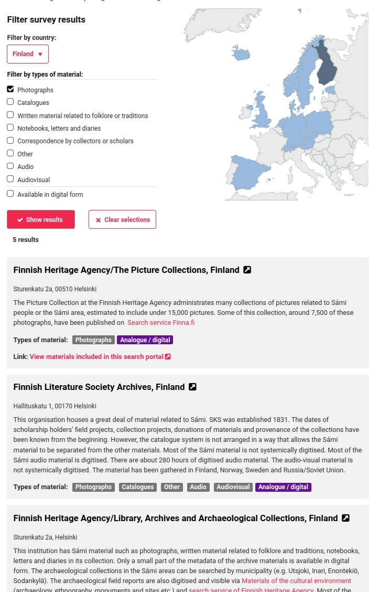
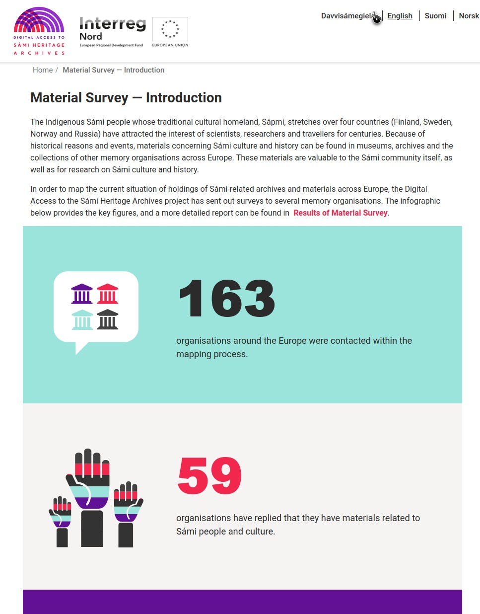
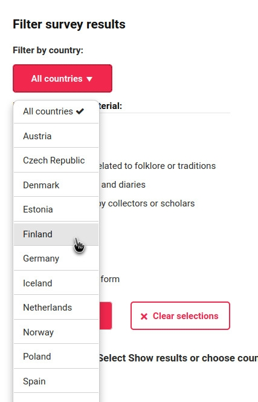
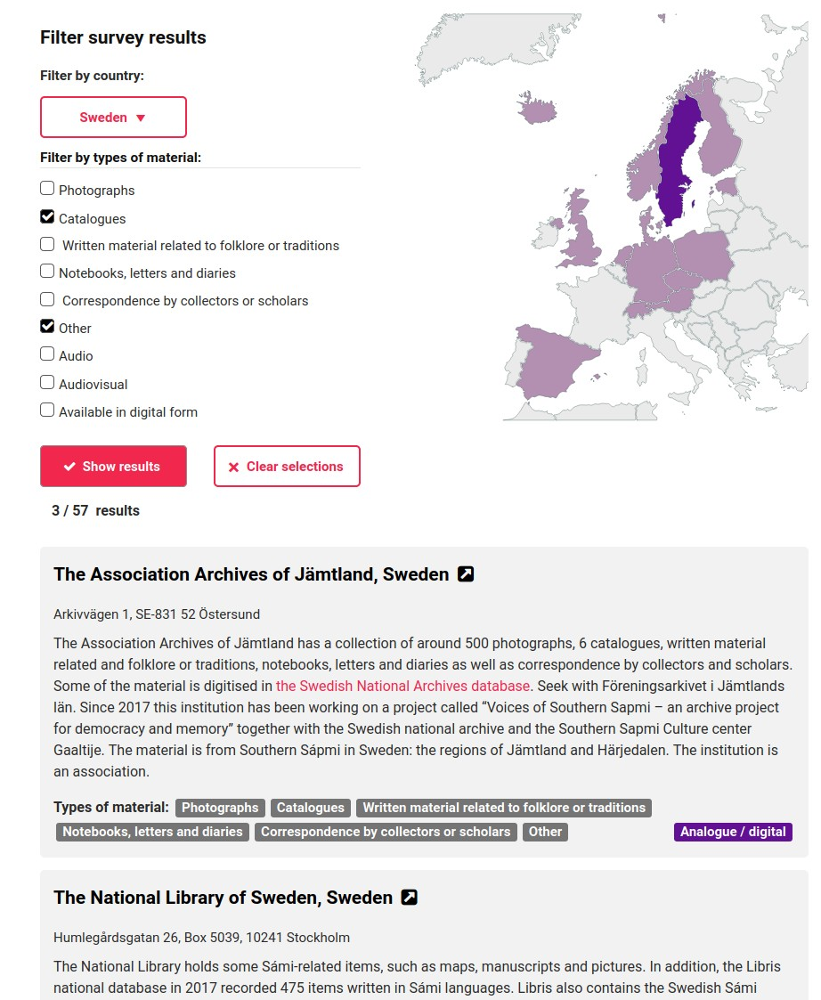
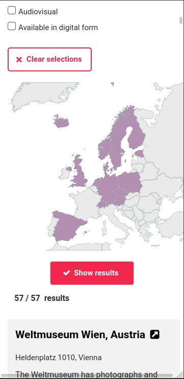

Nuohtti, Digital Access to the Sámi Heritage Archives
1–6 / 2021
I completed a general training in the international Digital Access to the Sámi Heritage Archives project. My employer was the University of Oulu. Biggest part of my job was to design, implement and test an interactive view as part of a search portal, which will be used to publish the results of the material mapping conducted by the research project as part of the service being developed. All views are fully responsive, multilingual and made accessible to people with disabilities.

In material survey search view user can set filtering criteria. The results are retrieved from spreadsheets. Results include a description, links, and show what types of materials are available as badges. Description can contain url-links. If materials are available in the search portal, link to it is provided.

I also did intro page to material survey. Text, color scheme and images were predetermined. I also did two column layout but single column got chosen.

Use can select country filter either by generated dropdown -menu or by selecting it in the map. Menu and map are synchronised using javascript and are responsive.

User can also filter results by different material types.

All the pages are fully responsive and useable by touch.